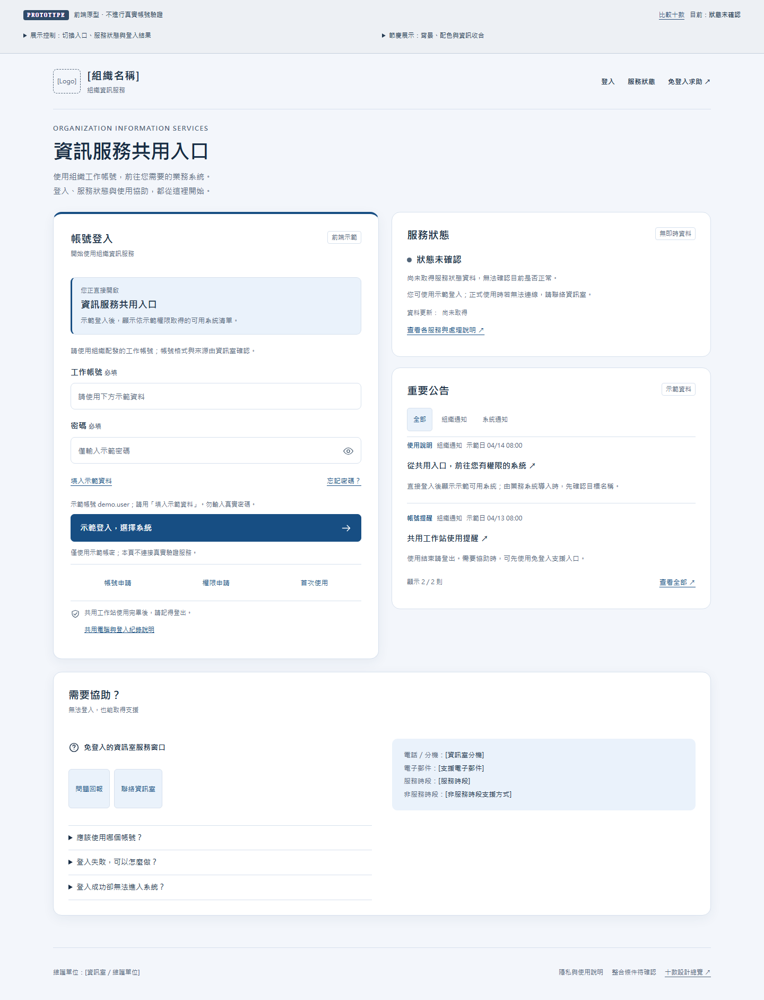
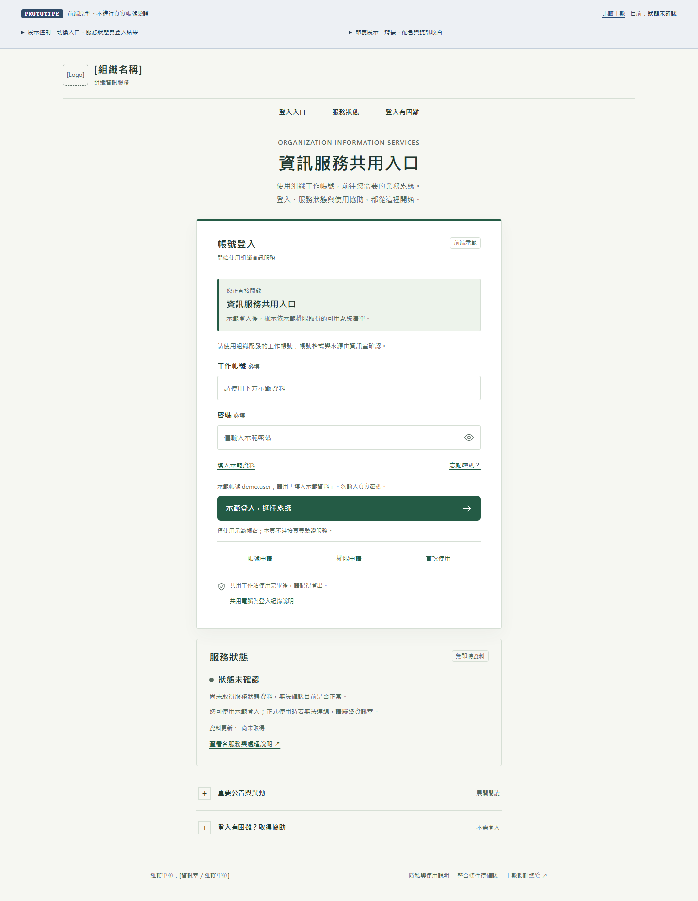
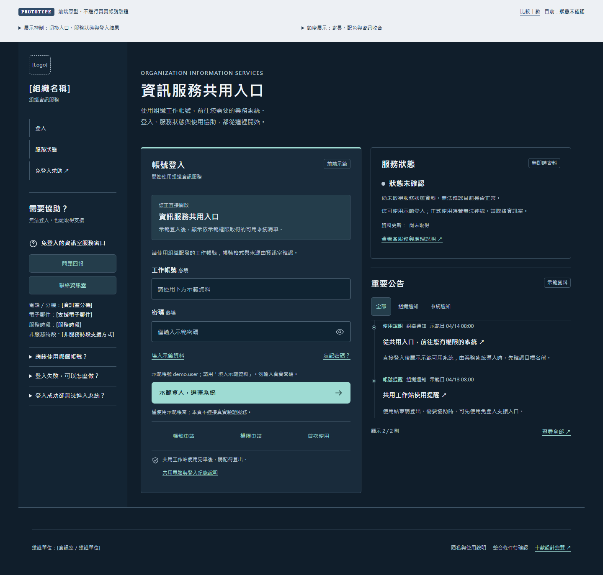
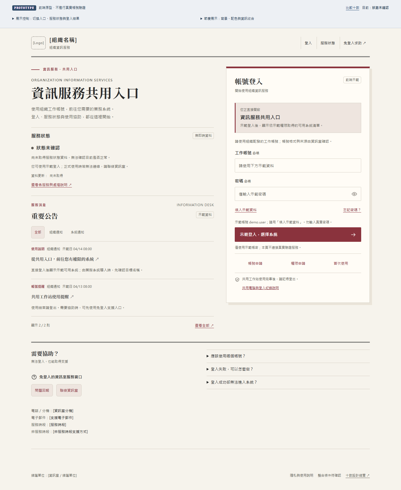
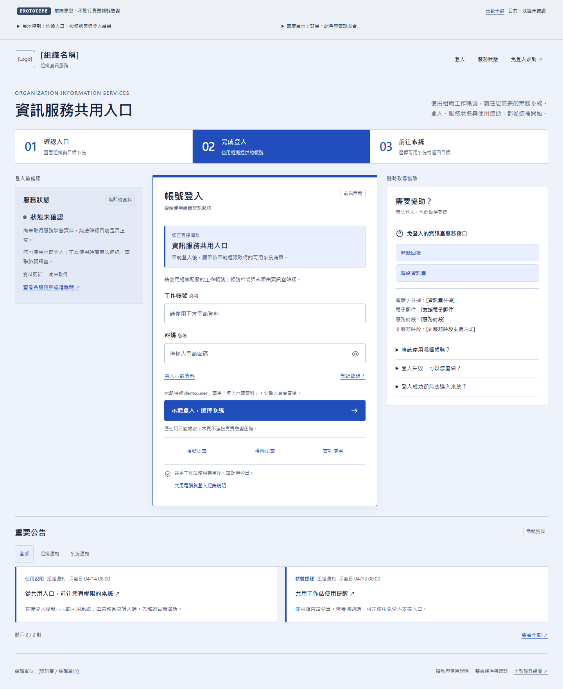
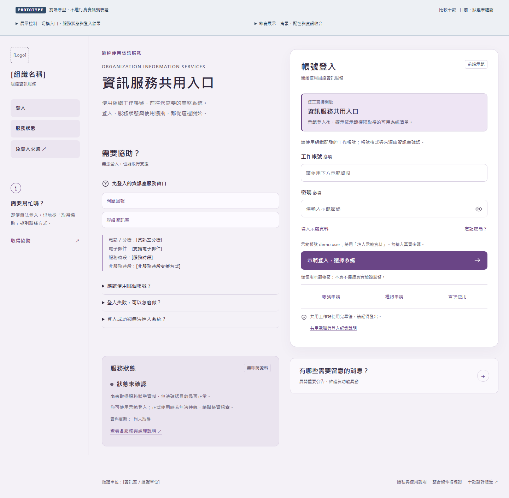
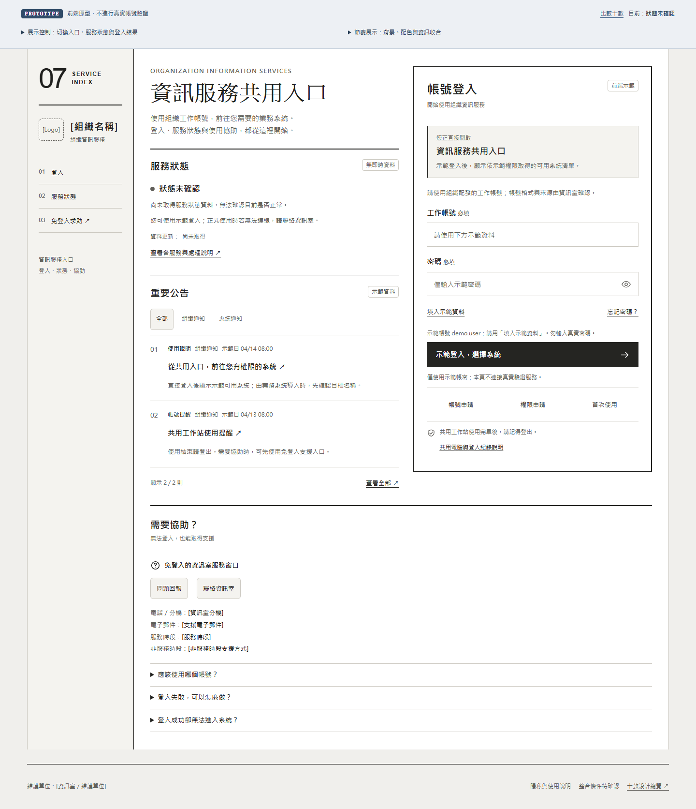
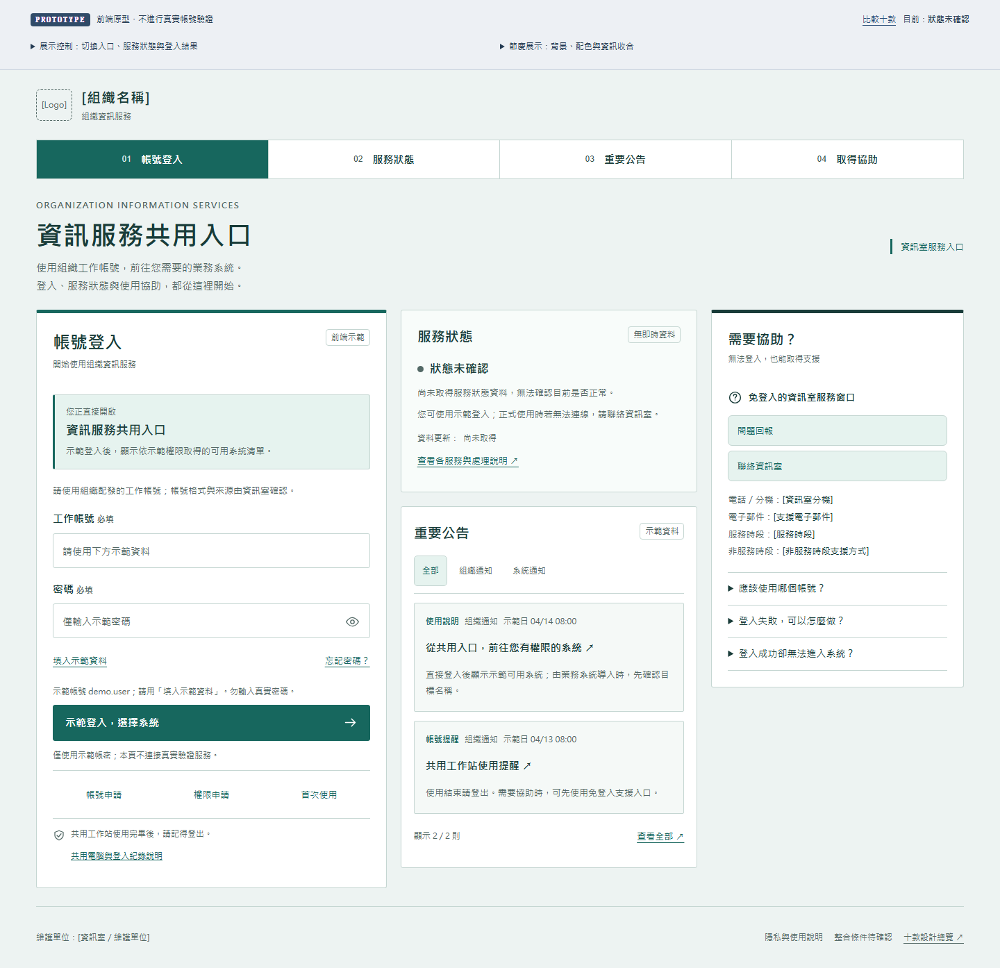
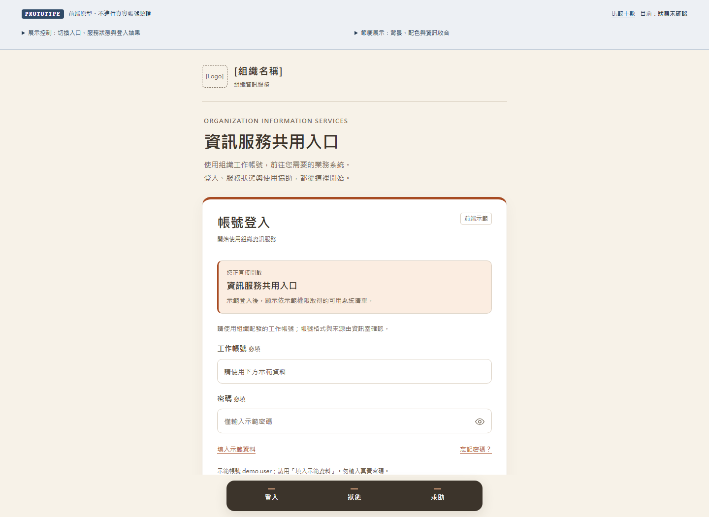
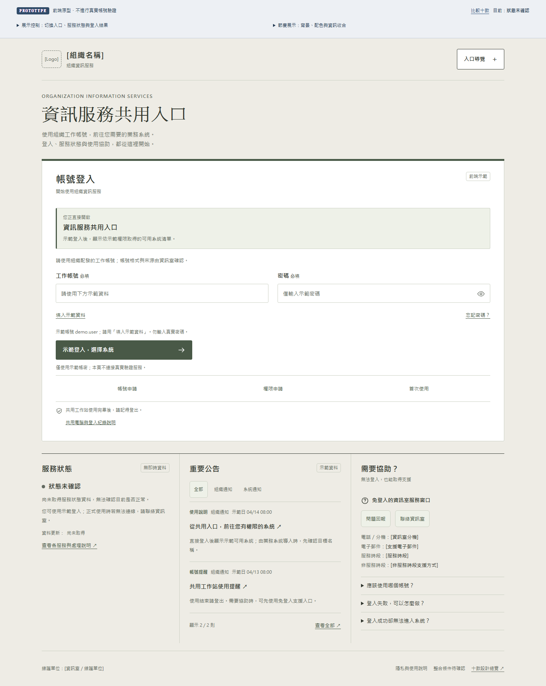

01ONE ENTRANCE. CLEAR NEXT STEPS.一個共用入口，
一個共用入口，
清楚的每一步。
如何登入、服務是否受影響、遇到問題如何求助。
十款使用同一組功能與資料，探索不同的資訊配置。
SEASONAL EXPERIENCE
預覽節慶與資訊收合 ↗節日換上新風景，登入依然清楚。
背景與配色模組化；切換背景主視覺模式，一般資訊點選展開，必要狀態與免登入求助保持可見。
選擇設計，開啟可操作的完整原型桌機 · 平板 · 手機

02
03
04
05
06
07
08
09
10用同樣的情境，公平比較。
- 開啟一款，按「填入示範資料」並登入，查看示範系統清單。
- 展開頂端「展示控制」，改為業務系統導入，觀察目標識別與返回結果。
- 切換部分異常或維護中，確認送出前能看見影響與可採取的行動。
- 切換驗證失敗、服務無法使用、逾時或無權限，檢查下一步與免登入支援。
示範資料僅在記憶體中使用，重新整理即可重置；不應輸入真實密碼。